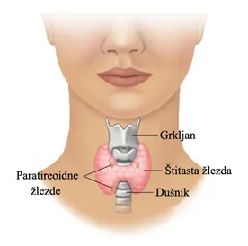

Ovo je takodje autoimuna bolest, poremećaj u kome imuni sistem napada sopstvene ćelije.
Ova bolest napada tiroidnu(štitnu) žlezdu. Može da izazove hipotireozu(usporen rad tiroidne žlezde) i hipertireozu(ubrzan rad tiroidne žlezde)
Tiroidna žlezda je mali organ u obliku leptira, koji se nalazi u prednjem delu vrata.
Tiroidni hormoni kontrolišu kako će telo koristiti energiju, pa onda utiču na svaki organ u telu, pa čak i otkucaje srca.
Kao i kod ostalih autoimunih bolesti, žene češće oboljevaju od tiroidne hašimoto. Ova bolest može se javiti mladim devojkama i ženama, ali češće se javlja kod žena od 30-50 godina. Veće šanse da će osoba oboleti je ako već neko u porodici ima ovakvu bolest.
Ukoliko osoba ima neku autoimunu bolest(lupus, dijabetes tipa 1...), verovatnoća je da će oboleti i od tirodne hašimoto.
Simptomi ove bolesti se ne ispolje odma, nekada trebaju godine da se razviju. Prvi znak je uvećena tiroidna žlezda, nazvana struma. Gušavost može uzrokovati da prednji deo vrata izgleda otečeno. Struma može otežati gutanje. Ostali simptomi su:

I dalje nije dokazano šta izaziva bolest, ali su sigurni da glavnu ulogu igraju geni i virusi.
Hipertireoza javlja se kada stitna žlezda proizvodi previše hormona tiroksina. Može da ubrza rad metabolizma koji uzrokuje gubitak telesne težine i ubrzan i nepravilan rad srca.
Postoji nekoliko tretmana za hipertireozu. Lekari koriste lekove protiv štitne žlezde i radioaktivni jod da uspore proizvodnju tiroidnih hormona. Ponekad lečenje hipertireoze uključuje operaciju za uklanjanje cele ili dela štitne žlezde
Stanje u kojem štitna žlezda ne proizvodi dovoljno određenih hormona.
Hipotiroidizam možda neće izazvati primetne simptome u ranim fazama. Vremenom, hipotireoza može izazvati brojne zdravstvene probleme, kao što su gojaznost, bol u zglobovima, neplodnost i srčana oboljenja.
Nakon toga lekar radi ultrazvuk, da bi video veličinu štitne žlezde i ostale karakteristike hašimota.
Lekari leče Hašimotovu bolest u zavistosti od toga koliko je štitna žlezda oštećena.
Obično se prepisuju lekovi kao što su eutiroks, levotiroksin i druge.
Ova bolest je neizlečiva, ali lekovima može da se reguliše rad štitne žlezde.
Život sa autoimunim bolestima može da se olakša, uz redovnu lekarsku kontrolu i odgovorajaću terapiju. Na žalost ove bolesti su neizlečive i ne zna se tačan uzrok, ali lekari se trude da bar smanje simptome.